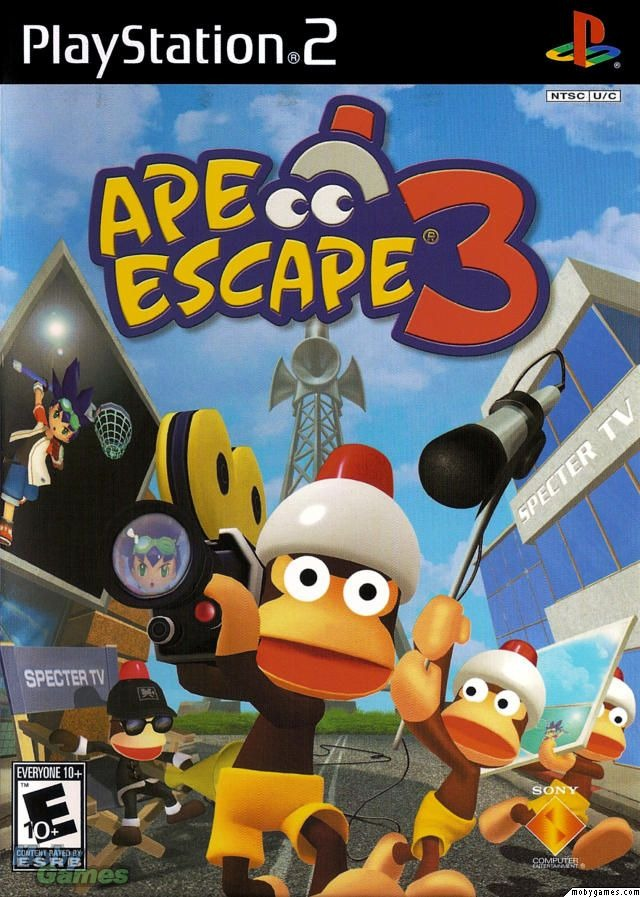

Sinopse
Ape Escape 3 é o terceiro título principal da série Ape Escape. No jogo, você controla Kei ou Yumi em uma missão para capturar centenas de macacos que escaparam e estão tentando dominar o mundo com transmissões televisivas hipnotizantes criadas pelo macaco Specter.
Utilizando uma variedade de gadgets criativos e habilidades especiais, os jogadores viajam por diferentes mundos temáticos, enfrentando desafios cômicos, armadilhas engenhosas e encontros hilariantes com os macacos mais travessos já vistos.
Características Principais
- Mais de 400 macacos para capturar em fases únicas e divertidas
- Transformações especiais que concedem habilidades únicas aos protagonistas
- Estilo visual colorido e cartunesco, com muito humor
- Mini-games extras, incluindo paródias de outros gêneros e mídias
- Trilha sonora energética e ambientes criativos
- Jogo totalmente dublado em inglês com opções de legendas